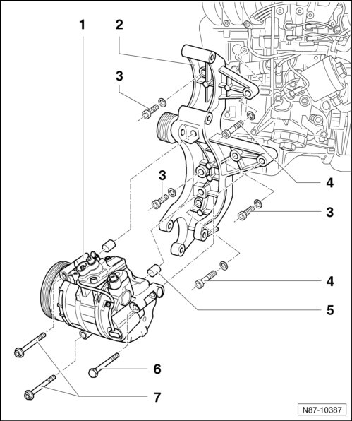

Engine Accessory Bracket: Service and Repair
A/C Compressor and Bracket, Engine Codes AZZ, BAA, BHK, BHL, BKJ, BMV, BMX and BRJ
• The auxiliary component bracket for A/C compressor and ancillary parts can be removed and installed without opening the refrigerant circuit.
• Note different screw lengths.

1 A/C Compressor
• Removing:
- Removing ribbed belt.
• Position of ribbed belt. Refer to --> [ Ribbed Belt Routing, Engine Code BHK ]
- Disconnect the connector on the A/C compressor.
• Make sure the connector is secure on the A/C compressor.
- Disconnect the refrigerant lines from the A/C compressor.
• The bolts are different lengths.
• The tightening specification is 20 ± 3 Nm.
- Remove the bolts - 6 - and - 7 -.
- Remove A/C compressor from auxiliary component bracket and secure to body with appropriate material for an example welding wire.
2 Alternator auxiliary component bracket and power steering vane pump
• No. on housing 022 260 089 F
• Removing:
• Before removing the alternator, remove the power steering pump and A/C compressor - 1 - from the sub-assembly bracket.
• Removing and installing alternator.
• Removing and installing P.A.S. vane pump.
• installing:
- Install the fitting bolts - 4 - first.
3 Screws M8x38
• 23 Nm
• Quantity: 3
4 Fitting screws M8x25
• 23 Nm
• Quantity: 2
5 Dowel sleeves
• Quantity: 2
• Ensure correct seating in bracket.
6 Bolt M10•100
• 45 Nm
7 Bolts M8•95
• 23 Nm